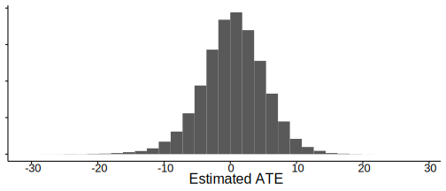
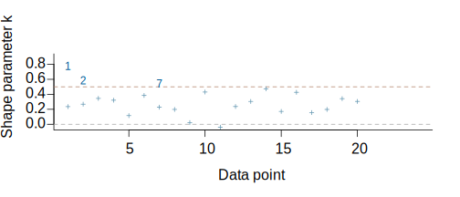

This vignette explains how to estimate linear models using the stan_lm function in the rstanarm package.
The four steps of a Bayesian analysis are
Steps 3 and 4 are covered in more depth by the vignette entitled “How to Use the rstanarm Package”. This vignette focuses on Step 1 when the likelihood is the product of independent normal distributions.
The goal of the rstanarm package is to make Bayesian estimation of common regression models routine. That goal can be partially accomplished by providing interfaces that are similar to the popular formula-based interfaces to frequentist estimators of those regression models. But fully accomplishing that goal sometimes entails utilizing priors that applied researchers are unaware that they prefer. These priors are intended to work well for any data that a user might pass to the interface that was generated according to the assumptions of the likelihood function.
It is important to distinguish between priors that are easy for applied researchers to specify and priors that are easy for applied researchers to conceptualize. The prior described below emphasizes the former but we outline its derivation so that applied researchers may feel more comfortable utilizing it.
The likelihood for one observation under a linear model can be written as a conditionally normal PDF \[\frac{1}{\sigma_{\epsilon} \sqrt{2 \pi}} e^{-\frac{1}{2} \left(\frac{y - \mu}{\sigma_{\epsilon}}\right)^2},\] where \(\mu = \alpha + \mathbf{x}^\top \boldsymbol{\beta}\) is a linear predictor and \(\sigma_{\epsilon}\) is the standard deviation of the error in predicting the outcome, \(y\). The likelihood of the entire sample is the product of \(N\) individual likelihood contributions.
It is well-known that the likelihood of the sample is maximized when the sum-of-squared residuals is minimized, which occurrs when \[ \widehat{\boldsymbol{\beta}} = \left(\mathbf{X}^\top \mathbf{X}\right)^{-1} \mathbf{X}^\top \mathbf{y}, \] \[ \widehat{\alpha} = \overline{y} - \overline{\mathbf{x}}^\top \widehat{\boldsymbol{\beta}}, \] \[ \widehat{\sigma}_{\epsilon}^2 = \frac{\left(\mathbf{y} - \widehat{\alpha} - \mathbf{X} \widehat{ \boldsymbol{\beta}}\right)^\top \left(\mathbf{y} - \widehat{\alpha} - \mathbf{X} \widehat{ \boldsymbol{\beta}}\right)}{N},\] where \(\overline{\mathbf{x}}\) is a vector that contains the sample means of the \(K\) predictors, \(\mathbf{X}\) is a \(N \times K\) matrix of centered predictors, \(\mathbf{y}\) is a \(N\)-vector of outcomes and \(\overline{y}\) is the sample mean of the outcome.
The lm function in R actually performs a QR decomposition of the design matrix, \(\mathbf{X} = \mathbf{Q}\mathbf{R}\), where \(\mathbf{Q}^\top \mathbf{Q} = \mathbf{I}\) and \(\mathbf{R}\) is upper triangular. Thus, the OLS solution for the coefficients can be written as \(\left(\mathbf{X}^\top \mathbf{X}\right)^{-1} \mathbf{X}^\top \mathbf{y} = \mathbf{R}^{-1} \mathbf{Q}^\top \mathbf{y}\). The lm function utilizes the QR decomposition for numeric stability reasons, but the QR decomposition is also useful for thinking about priors in a Bayesian version of the linear model. In addition, writing the likelihood in terms of \(\mathbf{Q}\) allows it to be evaluated in a very efficient manner in Stan.
The key innovation in the stan_lm function in the rstanarm package is the prior for the parameters in the QR-reparameterized model. To understand this prior, think about the equations that characterize the maximum likelihood solutions before observing the data on \(\mathbf{X}\) and especially \(\mathbf{y}\).
What would the prior distribution of \(\boldsymbol{\theta} = \mathbf{Q}^\top \mathbf{y}\) be? We can write its \(k\)-th element as \(\theta_k = \rho_k \sigma_Y \sqrt{N - 1}\) where \(\rho_k\) is the correlation between the \(k\)th column of \(\mathbf{Q}\) and the outcome, \(\sigma_Y\) is the standard deviation of the outcome, and \(\frac{1}{\sqrt{N-1}}\) is the standard deviation of the \(k\) column of \(\mathbf{Q}\). Then let \(\boldsymbol{\rho} = \sqrt{R^2}\mathbf{u}\) where \(\mathbf{u}\) is a unit vector that is uniformally distributed on the surface of a hypersphere. Consequently, \(R^2 = \boldsymbol{\rho}^\top \boldsymbol{\rho}\) is the familiar coefficient of determination for the linear model.
An uninformative prior on \(R^2\) would be standard uniform, which is a special case of a Beta distribution with both shape parameters equal to \(1\). A non-uniform prior on \(R^2\) is somewhat analagous to ridge regression, which is popular in data mining and produces better out-of-sample predictions than least squares because it penalizes \(\boldsymbol{\beta}^\top \boldsymbol{\beta}\), usually after standardizing the predictors. An informative prior on \(R^2\) effectively penalizes \(\boldsymbol{\rho}\top \boldsymbol{\rho}\), which encourages \(\boldsymbol{\beta} = \mathbf{R}^{-1} \boldsymbol{\theta}\) to be closer to the origin.
Lewandowski, Kurowicka, and Joe (2009) derives a distribution for a correlation matrix that depends on a single shape parameter \(\eta > 0\), which implies the variance of one variable given the remaining \(K\) variables is \(\mathrm{Beta}\left(\eta,\frac{K}{2}\right)\). Thus, the \(R^2\) is distributed \(\mathrm{Beta}\left(\frac{K}{2},\eta\right)\) and any prior information about the location of \(R^2\) can be used to choose a value of the hyperparameter \(\eta\). The R2(location, what) function in the rstanarm package supports four ways of choosing \(\eta\):
what = "mode" and location is some prior mode on the \(\left(0,1\right)\) interval. This is the default but since the mode of a \(\mathrm{Beta}\left(\frac{K}{2},\eta\right)\) distribution is \(\frac{\frac{K}{2} - 1}{\frac{K}{2} + \eta - 2}\) the mode only exists if \(K > 2\). If \(K \leq 2\), then the user must specify something else for what.what = "mean" and location is some prior mean on the \(\left(0,1\right)\) interval, where the mean of a \(\mathrm{Beta}\left(\frac{K}{2},\eta\right)\) distribution is \(\frac{\frac{K}{2}}{\frac{K}{2} + \eta}\).what = "median" and location is some prior median on the \(\left(0,1\right)\) interval. The median of a \(\mathrm{Beta}\left(\frac{K}{2},\eta\right)\) distribution is not available in closed form but if \(K > 2\) is approximately equal to \(\frac{\frac{K}{2} - \frac{1}{3}}{\frac{K}{2} + \eta - \frac{2}{3}}\). Regardless of whether \(K > 2\), the R2 function can numerically solve for the value of \(\eta\) that is consistent with a given prior median utilizing the quantile function.what = "log" and location is some (negative) prior value for \(\mathbb{E} \ln R^2 = \psi\left(\frac{K}{2}\right)- \psi\left(\frac{K}{2}+\eta\right)\), where \(\psi\left(\cdot\right)\) is the digamma function. Again, given a prior value for the left-hand side it is easy to numerically solve for the corresponding value of \(\eta\).There is no default value for the location argument of the R2 function. This is an informative prior on \(R^2\), which must be chosen by the user in light of the research project. However, specifying location = 0.5 is often safe, in which case \(\eta = \frac{K}{2}\) regardless of whether what is "mode", "mean", or "median". In addition, it is possible to specify NULL, in which case a standard uniform on \(R^2\) is utilized.
We set \(\sigma_y = \omega s_y\) where \(s_y\) is the sample standard deviation of the outcome and \(\omega > 0\) is an unknown scale parameter to be estimated. The only prior for \(\omega\) that does not contravene Bayes’ theorem in this situation is Jeffreys prior, \(f\left(\omega\right) \propto \frac{1}{\omega}\), which is proportional to a Jeffreys prior on the unkown \(\sigma_y\), \(f\left(\sigma_y\right) \propto \frac{1}{\sigma_y} = \frac{1}{\omega \widehat{\sigma}_y} \propto \frac{1}{\omega}\). This parameterization and prior makes it easy for Stan to work with any continuous outcome variable, no matter what its units of measurement are.
It would seem that we need a prior for \(\sigma_{\epsilon}\), but our prior beliefs about \(\sigma_{\epsilon} = \omega s_y \sqrt{1 - R^2}\) are already implied by our prior beliefs about \(\omega\) and \(R^2\). That only leaves a prior for \(\alpha = \overline{y} - \overline{\mathbf{x}}^\top \mathbf{R}^{-1} \boldsymbol{\theta}\). The default choice is an improper uniform prior, but a normal prior can also be specified such as one with mean zero and standard deviation \(\frac{\sigma_y}{\sqrt{N}}\).
The previous sections imply a posterior distribution for \(\omega\), \(\alpha\), \(\mathbf{u}\), and \(R^2\). The parameters of interest can then be recovered as generated quantities:
The implementation actually utilizes an improper uniform prior on \(\ln \omega\). Consequently, if \(\ln \omega = 0\), then the marginal standard deviation of the outcome implied by the model is the same as the sample standard deviation of the outcome. If \(\ln \omega > 0\), then the marginal standard deviation of the outcome implied by the model exceeds the sample standard deviation, so the model overfits the data. If \(\ln \omega < 0\), then the marginal standard deviation of the outcome implied by the model is less than the sample standard deviation, so the model underfits the data or that the data-generating process is nonlinear. Given the regularizing nature of the prior on \(R^2\), a minor underfit would be considered ideal if the goal is to obtain good out-of-sample predictions. If the model badly underfits or overfits the data, then you may want to reconsider the model.
We will utilize an example from the HSAUR3 package by Brian S. Everitt and Torsten Hothorn, which is used in their 2014 book A Handbook of Statistical Analyses Using R (3rd Edition) (Chapman & Hall / CRC). This book is frequentist in nature and we will show how to obtain the corresponding Bayesian results.
The model in section 5.3.1 analyzes an experiment where clouds were seeded with different amounts of silver iodide to see if there was increased rainfall. This effect could vary according to covariates, which (except for time) are interacted with the treatment variable. Most people would probably be skeptical that cloud hacking could explain very much of the variation in rainfall and thus the prior mode of the \(R^2\) would probably be fairly small.
The frequentist estimator of this model can be replicated by executing
data("clouds", package = "HSAUR3")
ols <- lm(rainfall ~ seeding * (sne + cloudcover + prewetness + echomotion) +
time, data = clouds)
round(coef(ols), 3) (Intercept) seedingyes
-0.346 15.683
sne cloudcover
0.420 0.388
prewetness echomotionstationary
4.108 3.153
time seedingyes:sne
-0.045 -3.197
seedingyes:cloudcover seedingyes:prewetness
-0.486 -2.557
seedingyes:echomotionstationary
-0.562 Note that we have not looked at the estimated \(R^2\) or \(\sigma\) for the ordinary least squares model. We can estimate a Bayesian version of this model by prepending stan_ to the lm call, specifying a prior mode for \(R^2\), and optionally specifying how many cores the computer may utilize:
library(rstanarm)
post <- stan_lm(rainfall ~ seeding * (sne + cloudcover + prewetness +
echomotion) + time, data = clouds,
prior = R2(location = 0.2),
chains = CHAINS, cores = CORES, seed = SEED)
poststan_lm(formula = rainfall ~ seeding * (sne + cloudcover + prewetness +
echomotion) + time, data = clouds, chains = CHAINS, cores = CORES,
seed = SEED, prior = R2(location = 0.2))
Estimates:
Median MAD_SD
(Intercept) 2.3 2.2
seedingyes 6.5 3.6
sne 0.2 0.6
cloudcover 0.2 0.2
prewetness 1.7 2.7
echomotionstationary 1.3 1.5
time 0.0 0.0
seedingyes:sne -1.3 1.0
seedingyes:cloudcover -0.2 0.2
seedingyes:prewetness -1.1 3.6
seedingyes:echomotionstationary -0.3 2.1
sigma 2.7 0.4
log-fit_ratio 0.0 0.1
R2 0.3 0.1
Sample avg. posterior predictive
distribution of y (X = xbar):
Median MAD_SD
mean_PPD 4.5 2.7 In this case, the “Bayesian point estimates”, which are represented by the posterior medians, appear quite different from the ordinary least squares estimates. However, the log-fit_ratio (i.e. \(\ln \omega\)) is quite small, indicating that the model only slightly overfits the data when the prior derived above is utilized. Thus, it would be safe to conclude that the ordinary least squares estimator considerably overfits the data since there are only \(24\) observations to estimate \(12\) parameters with and no prior information on the parameters.
Also, it is not obvious what the estimated average treatment effect is since the treatment variable, seeding, is interacted with four other correlated predictors. However, it is easy to estimate or visualize the average treatment effect (ATE) using rstanarm’s posterior_predict function.
clouds_cf <- clouds
clouds_cf$seeding[] <- "yes"
y1_rep <- posterior_predict(post, newdata = clouds_cf)
clouds_cf$seeding[] <- "no"
y0_rep <- posterior_predict(post, newdata = clouds_cf)
qplot(x = c(y1_rep - y0_rep), geom = "histogram",
ylab = NULL, xlab = "Estimated ATE")
As can be seen, the treatment effect is not estimated precisely and is as almost as likely to be negative as it is to be positive.
The prior derived above works well in many situations and is quite simple to use since it only requires the user to specify the prior location of the \(R^2\). Nevertheless, the implications of the prior are somewhat difficult to conceptualize. Thus, it is perhaps worthwhile to compare to another estimator of a linear model that simply puts independent Cauchy priors on the regression coefficients. This simpler approach can be executed by calling the stan_glm function with family = gaussian() and specifying the priors:
simple <- stan_glm(rainfall ~ seeding * (sne + cloudcover + prewetness +
echomotion) + time,
data = clouds, family = gaussian(),
prior = cauchy(), prior_intercept = cauchy(),
chains = CHAINS, cores = CORES, seed = SEED)We can compare the two approaches using an approximation to Leave-One-Out (LOO) cross-validation, which is implemented by the loo function in the loo package.
(loo_post <- loo(post))Computed from 2000 by 24 log-likelihood matrix
Estimate SE
elpd_loo -60.8 5.5
p_loo 6.2 2.6
looic 121.6 11.0Warning: 4 (16.7%) Pareto k estimates between 0.5 and 1Warning: See PSIS-LOO description (?'loo-package') for more information(loo(simple))Computed from 2000 by 24 log-likelihood matrix
Estimate SE
elpd_loo -61.4 4.2
p_loo 10.3 2.5
looic 122.8 8.5Warning: 11 (45.8%) Pareto k estimates between 0.5 and 1
Warning: See PSIS-LOO description (?'loo-package') for more informationThe results indicate that the first approach is expected to produce better out-of-sample predictions but the Warning messages are at least as important. Many of the estimated shape parameters for the Generalized Pareto distribution are above \(0.5\) in the model with Cauchy priors, which indicates that these estimates are only going to converge slowly to the true out-of-sample deviance measures. Thus, with only \(24\) observations, they should not be considered reliable. The more complicated prior derived above is stronger — as evidenced by the fact that the effective number of parameters is about half of that in the simpler approach and \(12\) for the maximum likelihood estimator — and only has \(4\) out of \(24\) shape estimates in the “danger zone”. We might want to reexamine these observations
plot(loo_post, label_points = TRUE)
because the posterior is sensitive to them but, overall, the results seem tolerable.
In general, we would expect the joint prior derived here to work better when there are many predictors relative to the number of observations. Placing independent, heavy-tailed priors on the coefficients neither reflects the beliefs of the researcher nor conveys enough information to stabilize all the computations.
This vignette has discussed the prior distribution utilized in the stan_lm function, which has the same likelihood and a similar syntax as the lm function in R but adds the ability to expression prior beliefs about the location of the \(R^2\), which is the familiar proportion of variance in the outcome variable that is attributable to the predictors under a linear model. Since the \(R^2\) is a well-understood bounded scalar, it is easy to specify prior information about it, whereas other Bayesian approaches require the researcher to specify a joint prior distribution for the regression coefficients (and the intercept and error variance).
However, most researchers have little inclination to specify all these prior distributions thoughtfully and take a short-cut by specifying one prior distribution that is taken to apply to all the regression coefficients as if they were independent of each other (and the intercept and error variance). This short-cut is available in the stan_glm function and is described in more detail in other rstanarm vignettes for Generalized Linear Models (GLMs).
We are optimistic that this prior on the \(R^2\) will greatly help in accomplishing our goal for rstanarm of making Bayesian estimation of regression models routine. The same approach is used to specify a prior in ANOVA models (see stan_aov) and proportional-odds models for ordinal outcomes (see stan_polr).